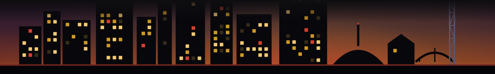

This game only runs on windows whose state we can stand behind -- ones still inside their own stated run, and ones whose stated run has closed. Right now we do not have enough of both on file to deal a fair round (standing: 0, closed: 42). We would rather show you nothing than guess.
The back catalog is still worth a wander, though:
Everything here was on a timer. Some are still hanging on, most are already gone -- and you only find out which when it is too late to go. Friday's roundup is the whole week of here-then-gone Nashville, in your inbox while there is still time. Free.
Get Friday's roundup, free →Every window here is real and every answer is the window's own stated close date, read from the Fleeting. discovery crawl on November 5, 2026 and shown with the issue it ran in. A "still standing" window is one still inside its stated run as of that crawl -- confirm with the source before you go. Want the live read instead? Try the window checker or the closed-windows archive.